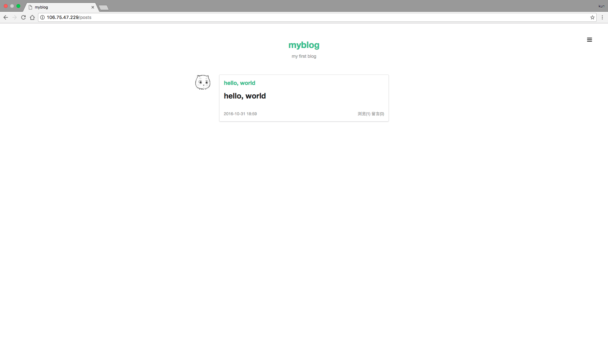

4.15.1 申请 MLab
MLab (前身是 MongoLab) 是一个 mongodb 云数据库提供商，我们可以选择 500MB 空间的免费套餐用来测试。注册成功后，点击右上角的 Create New 创建一个数据库（如: myblog），成功后点击进入到该数据库详情页，注意页面中有一行黄色的警告：
|
|
每个数据库至少需要一个 user，所以我们点击 Users 下的 Add database user 创建一个用户。
注意：不要选中
Make read-only，因为我们有写数据库的操作。
最后分配给我们的类似下面的 mongodb url：
|
|
如我创建的用户名和密码都为 myblog 的用户，新建 config/production.js，添加如下代码：
config/production.js
|
|
停止程序，然后以 production 配置启动程序:
|
|
注意：Windows 用户安装 cross-env，使用：
4.15.2 pm2
当我们的博客要部署到线上服务器时，不能单纯的靠 node index 或者 supervisor index 来启动了，因为我们断掉 SSH 连接后服务就终止了，这时我们就需要像 pm2 或者 forever 这样的进程管理器了。pm2 是 Node.js 下的生产环境进程管理工具，就是我们常说的进程守护工具，可以用来在生产环境中进行自动重启、日志记录、错误预警等等。以 pm2 为例，全局安装 pm2：
|
|
修改 package.json，添加 start 的命令：
package.json
|
|
然后运行 npm start 通过 pm2 启动程序，如下图所示 ：

pm2 常用命令:
pm2 start/stop: 启动/停止程序pm2 reload/restart [id|name]: 重启程序pm2 logs [id|name]: 查看日志pm2 l/list: 列出程序列表
更多命令请使用 pm2 -h 查看。
4.15.2 部署到 Heroku
Heroku 是一个支持多种编程语言的云服务平台，Heroku 也提供免费的基础套餐供开发者测试使用。现在，我们将论坛部署到 Heroku。
注意：新版 heroku 会有填写信用卡的步骤，如果没有请跳过本节。
首先，需要到 https://toolbelt.heroku.com/ 下载安装 Heroku 的命令行工具包 toolbelt。然后登录（如果没有账号，请注册）到 Heroku 的 Dashboard，点击右上角 New -> Create New App 创建一个应用。创建成功后运行：
|
|
填写正确的 email 和 password 验证通过后，本地会产生一个 SSH public key，然后输入以下命令：
|
|
稍后，我们的论坛就部署成功了。访问：
|
|
4.15.3 部署到 UCloud
UCloud 是国内的一家云计算服务商，接下来我们尝试将博客搭在 UCloud 上。
小提示：不是给 UCloud 打广告。Heroku 不能用后，于是寻找可以免费试用的云主机，注册 UCloud 后发现没有免费试用，于是果断弃坑。过了一会 UCloud 的人打电话回访然后给充了点钱。。于是我就试了下。如果你们注册没有赠送金额，可以联系 UCloud 索要。。
创建主机
- 注册 UCloud
- 点击左侧的
云主机，然后点击创建主机，统统选择最低配置 - 右侧付费方式选择
按时（每小时），点击立即购买 - 在支付确认页面，点击
确认支付
购买成功后回到主机管理列表，如下所示：

注意：下面所有的 ip 都替换为你自己的外网 ip。
环境搭建与部署
修改 config/production.js，将 port 修改为 80 端口：
config/production.js
|
|
登录主机，用刚才设置的密码：
|
|
因为是 CentOS 系统，所以我选择使用 yum 安装，而不是下载源码编译安装：
|
|
注意：如果
node -v显示的不是 6.9.1，则断开 ssh，重新登录主机再试试。
此时应该在 /root 目录下，运行以下命令：
注意：如果不想用 git 的形式将代码拉到云主机上，可以用 rsync 将本地的代码同步到你的 UCloud 主机上，如上所示。
最后，访问你的公网 ip 地址试试吧，如下所示：

小提示：绑定域名不在本节讲解范围，读者可自行尝试。
小提示：因为我们选择的按时付费套餐，测试完成后，可在主机管理页面选择关闭主机，节约费用。
上一节：4.14 测试